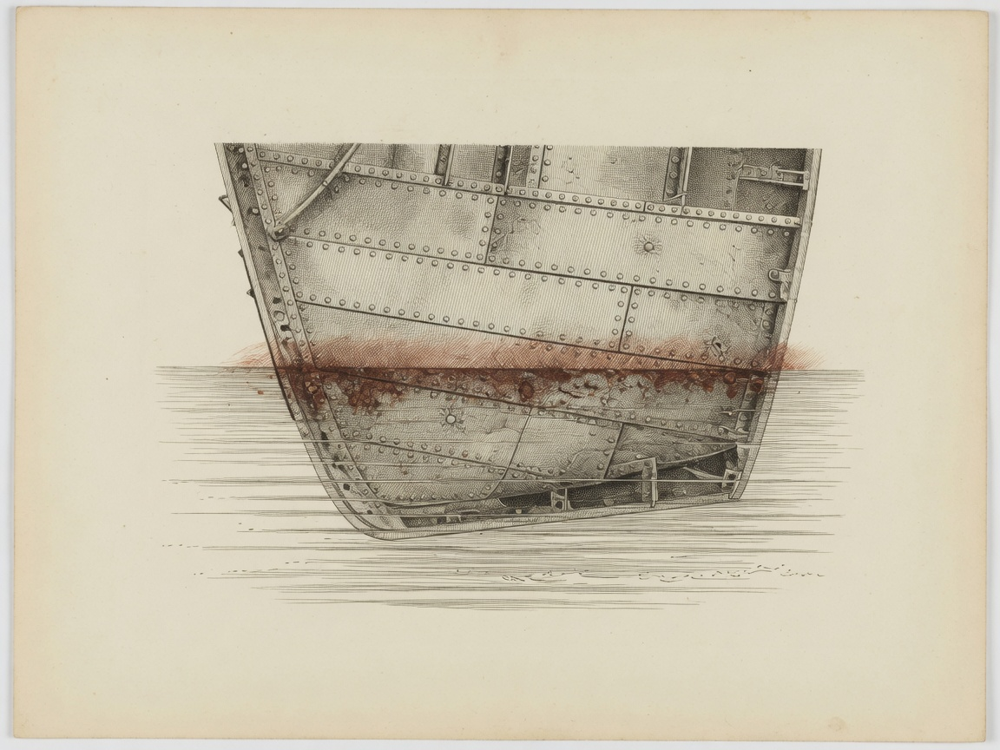

18
Swarm Brief
This page shows the saved steps behind a short report on ship rust. It does not run the script live.
Do this. Read the boxes. A green border means that step passed. Open the explainer link for the written page.